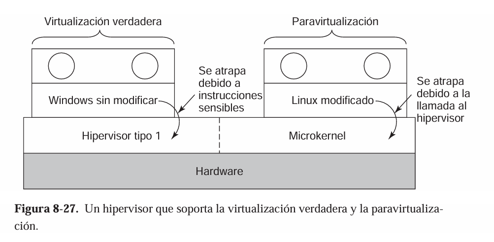

6.2.3 Paravirtualización
¿Qué es la paravirtualización?
La paravirtualización es una técnica de virtualización en la que el sistema operativo invitado es modificado para ser consciente de que se está ejecutando en un entorno virtualizado. A diferencia de la virtualización completa, donde el hipervisor debe emular todo el hardware, en la paravirtualización el sistema operativo invitado coopera con el hipervisor mediante interfaces especiales (llamadas "hypercalls") para mejorar el rendimiento y la eficiencia.
¿Cómo funciona?
- El sistema operativo invitado se modifica para reemplazar ciertas instrucciones privilegiadas por llamadas directas al hipervisor.
- El hipervisor gestiona estas llamadas y proporciona acceso controlado a los recursos del hardware físico.
- Al evitar la emulación completa del hardware, se reduce la sobrecarga y se mejora el rendimiento.

Tanenbaum, A. S., & Van Steen, M. (2009). Sistemas operativos modernos. Pearson Educación.
Ventajas y desventajas
- Ventajas: Mejor rendimiento que la virtualización completa, menor sobrecarga, mayor eficiencia en el uso de recursos.
- Desventajas: Requiere modificar el sistema operativo invitado, lo que limita la compatibilidad con sistemas operativos propietarios o cerrados.
Ejemplos de uso
- Xen es uno de los hipervisores más conocidos que utiliza paravirtualización.
- Linux es un sistema operativo que puede ser modificado para ejecutarse en modo paravirtualizado.
Stallings, W. (2018). Sistemas operativos: Conceptos y diseño. Pearson.